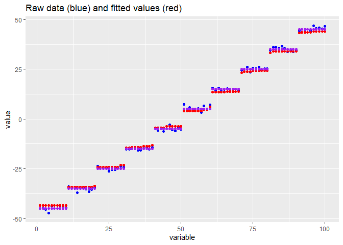

Louis Dijkstra 2025-05-23
wflsa: Weighted Fused LASSO Signal Approximator
The wflsa R package provides an efficient implementation of an algorithm for solving the Weighted Fused LASSO Signal Approximator problem. This algorithm is based on an ADMM (Alternating Direction Method of Multipliers) approach and is designed to estimate a vector of coefficients with sparsity and smoothness constraints.
Installation
You can install the package from GitHub using pak:
# install.packages("pak")
pak::pak("bips-hb/wflsa")Problem Formulation
The problem solved by the wFLSA algorithm is formulated as follows:
= ( \ y - \_2^2 + _1 \ \_1 + _2 _{i < j} w_{ij} | _i - _j | )
Where:
- is the response variable with mean 0.
- is the vector of coefficients to be estimated.
- and are the - and -norms, respectively.
- is the regularization parameter controlling the strength of the sparsity penalty.
- is the regularization parameter controlling the smoothness.
- is the weight between the -th and -th coefficient.
Example Use
A simple example:
library(wflsa)
set.seed(1)
# number of covariates
p <- 10
# the response vector
y <- rnorm(p)
# Fully connected (Weight matrix is 1)
W <- matrix(rep(1, p*p), ncol = p) - diag(p)
# lambda values:
lambda1 <- c(0.01, 0.1, 0.2)
lambda2 <- c(0.01, 0.1, 0.2)
# Solve the weighted Fused LASSO Signal Approximator
wflsa(y, W, lambda1, lambda2)
#> Weighted Fused LASSO Signal Approximator
#>
#> Number of variables (p) : 10
#> Number of lambda pairs : 9
#>
#> Estimated beta coefficients
#> (0.01, 0.01): -0.70 0.05 -0.87 1.36 0.18 -0.87 0.32 0.53 ...
#> (0.10, 0.01): -0.61 0.00 -0.78 1.27 0.09 -0.78 0.23 0.44 ...
#> (0.20, 0.01): -0.51 0.00 -0.68 1.17 0.00 -0.68 0.13 0.34 ...
#> (0.01, 0.10): -0.18 0.02 -0.18 0.55 0.02 -0.18 0.02 0.02 ...
#> (0.10, 0.10): -0.09 0.00 -0.09 0.46 0.00 -0.09 0.00 0.00 ...
#> ...
#>
#> Number of non-zero coefficients:
#> 10 9 8 10 5 1 0 0 0A more involved exaples:
library(flsa)
#> Warning: Paket 'flsa' wurde unter R Version 4.4.3 erstellt
library(ggplot2)
#> Warning: Paket 'ggplot2' wurde unter R Version 4.4.3 erstellt
# number of parameters. NOTE: is fixed here
p <- 100
# the average
mu <- as.vector(sapply(1:10 * 10, function(mu) rep(mu, 10)))
mu <- mu - mean(mu)
# generating the data
y <- rnorm(100, mean = mu)
# band_matrix function creates a square matrix with a band around the diagonal.
# Parameters:
# - p: Size of the square matrix.
# Usage: band_matrix(p)
# Default band width is set to 1, but it can be adjusted as needed.
band_matrix <- function(p) {
band_width <- 1 # Adjust the band width as needed
# Create a matrix with a band around the diagonal
my_matrix <- matrix(0, nrow = p, ncol = p)
for (i in 1:p) {
lower <- max(1, i - band_width)
upper <- min(p, i + band_width)
my_matrix[i, lower:upper] <- 1
}
diag(my_matrix) <- 0 # Set diagonal elements to 0 (optional, as they are already 1)
my_matrix
}
# creating the weight matrix commonly used for the 1-dimensional fused lasso signal approximator
W <- band_matrix(p)
fit <- wflsa(y, W, lambda1 = 1, lambda2 = 4)
fit_flsa <- as.vector(flsa(y, lambda1 = .1, lambda2 = 2))
data <- data.frame(
index = 1:p,
mu = mu,
y = y,
beta_fit = fit$betas[[1]],
beta_fit_flsa = fit_flsa
)
ggplot2::ggplot(data) +
geom_point(mapping = aes(index, y), color = 'blue') +
geom_point(mapping = aes(index, beta_fit), color = 'red') +
geom_point(mapping = aes(index, mu), color = 'purple') +
ylab("value") +
xlab("variable") +
ggtitle("Raw data (blue) and fitted values (red)")